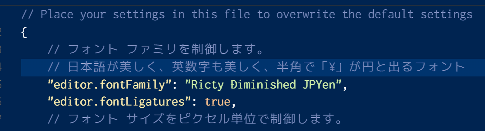
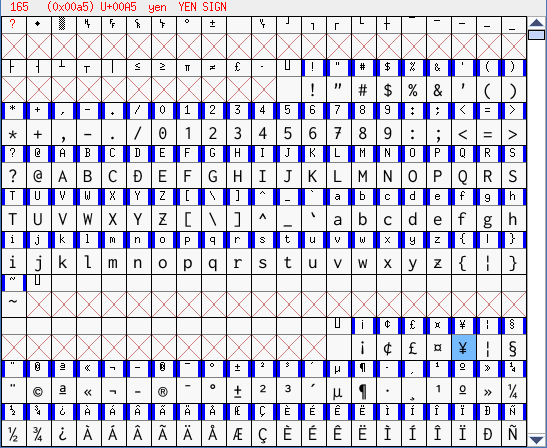
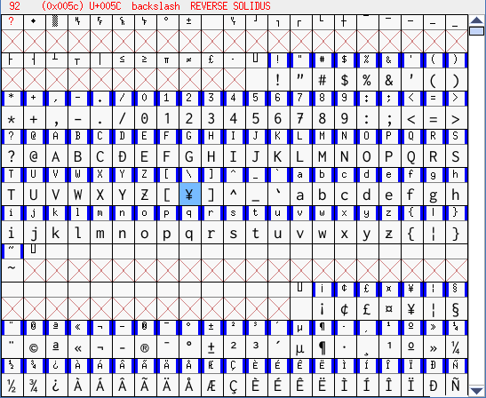

Windowsの場合は、「日本語が使えるフォント」で「アルファベットが綺麗に表示されるフォント」で、
は数が多くありません。
そこで個人的に考えますに、Ricty Diminished Discord-RegularをWin向けに少し編集して利用するのがお勧めです。
当サイトの管理人が、Ricty Diminished Discord-Regularを編集したフォントを
https://github.com/vscode-life/vscode-life/tree/master/win-vscode-font
に上げていますので、利用してください。
フォント名は「Ricty Diminished JPYen」です。

Ricty Diminished Discord-Regularを、
FontForgeなどを利用して、「(半角)＼」の内容を、

「(半角)￥」をコピー＆ペーストしておきましょう。
Ricty Diminished JPYen は SIL Open Font License (OFL) Version 1.1 に従い、配布しています。